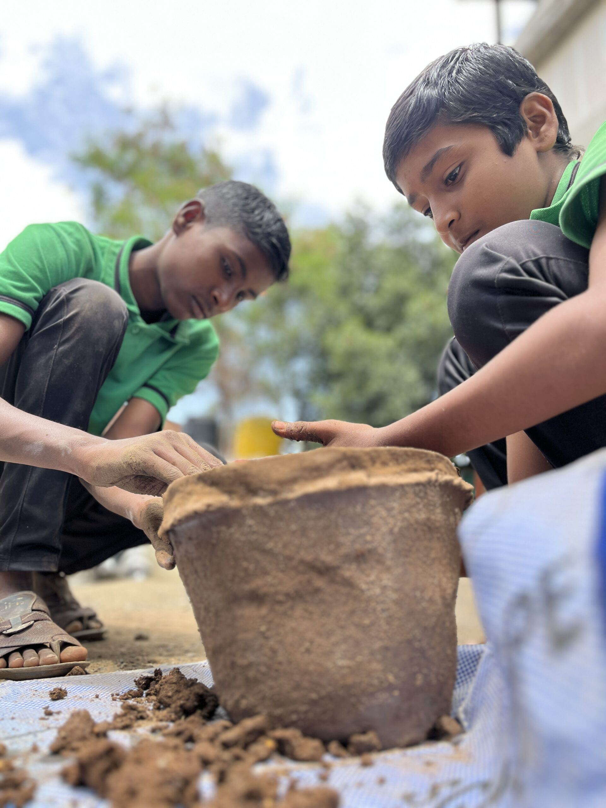
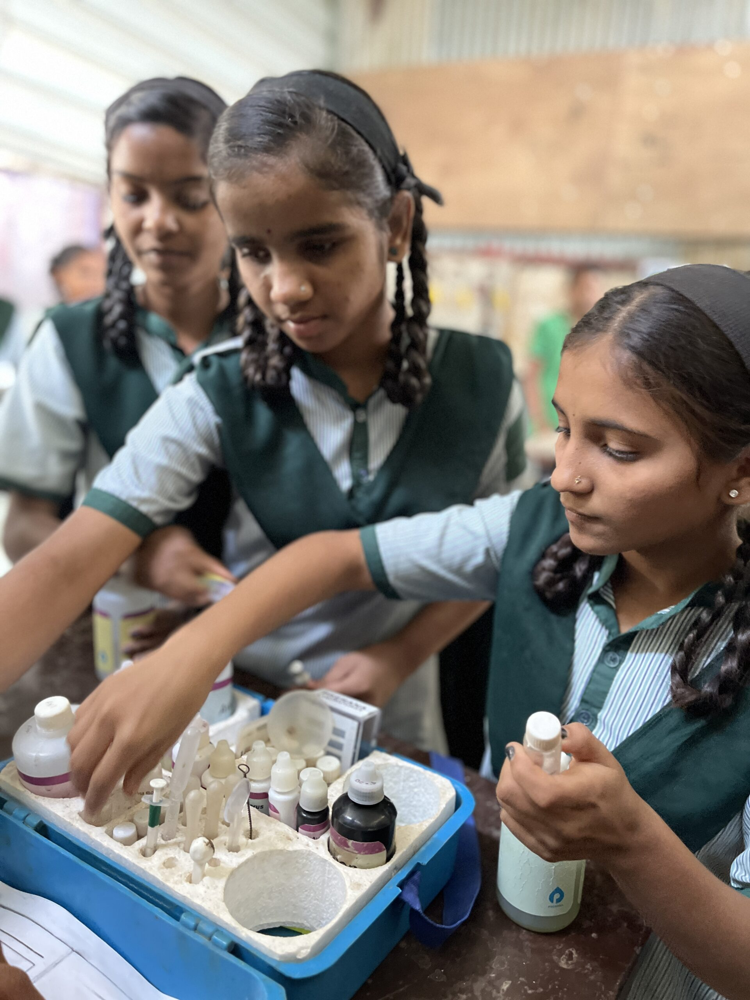
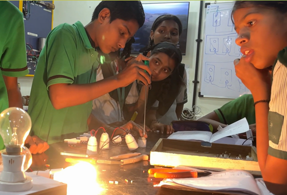
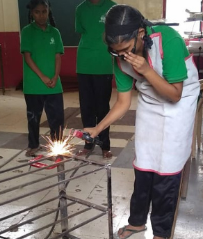
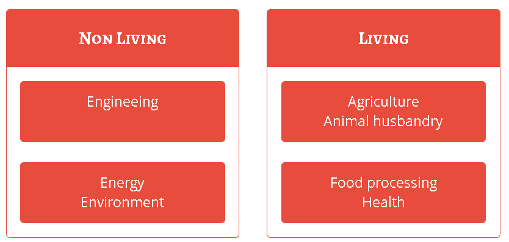

Introduction to Basic Technology (IBT) - Multi Skill Foundation Course (MSFC)
(Integrating Socially Useful Productive work with school curriculum)
Work Centric Education Program In Secondary Schools
The program is recognised under National Skills Qualification Framework (NSQF)
as Multi Skill Foundation Course (MSFC)




What is IBT ?
STEM (Science , Technology , Engineering, Mathematics )Program in School
Learning While Doing pedagogy in school
Project based learning
Students involved in Socially useful productive work (SUPW).
Community Services – Students providing various services to the community as part of their learning.
Integration of ‘Work Activity’ with School curriculum
Who can implement IBT ?
Any school from class VI – X std can implement IBT program.
Govt of Maharashtra has approved it as a Pre-vocational subject V1 for class VIII – X std since 1987
It is also approved under name ‘Multi Skills Foundation Course (MSFC)’ under National Skills Qualification Framework. It can be taken up as a core subject in Maharashtra.
What is taught in the IBT Program ?
IBT program considers ‘Nature’ as the syllabus. Broadly everything related to ‘Living’ and ‘Non Living’ can be part of IBT curriculum. The program is divided into four sections i.e

How to implement the program ?
The program is given to students for one day per week (10 school period per week).
School provides for land, 2 classrooms (800 sq.ft), and electric connection.
Tools and equipment (Approx Rs.100000/-) to be made available in the school.
Instructors (Preferably entrepreneur from the community) having demonstrable skills to be selected as instructors.
Recurring expenses for instructor’s honorarium and consumables need to arranged.
A science/mathematics/other subject teacher need to be involved to link work activity with the curricular concepts.
Who can implement IBT ?
Any school from class VI – X std can implement IBT program.
Govt of Maharashtra has approved it as a Pre-vocational subject V1 for class VIII – X std since 1987
It is also approved under name ‘Multi Skills Foundation Course (MSFC)’ under National Skills Qualification Framework. It can be taken up as a core subject in Maharashtra.
How to implement the program ?
The program is given to students for one day per week (10 school period per week).
School provides for land, 2 classrooms (800 sq.ft), and electric connection.
Tools and equipment (Approx Rs.100000/-) to be made available in the school.
Instructors (Preferably entrepreneur from the community) having demonstrable skills to be selected as instructors.
Recurring expenses for instructor’s honorarium and consumables need to arranged.
A science/mathematics/other subject teacher need to be involved to link work activity with the curricular concepts.